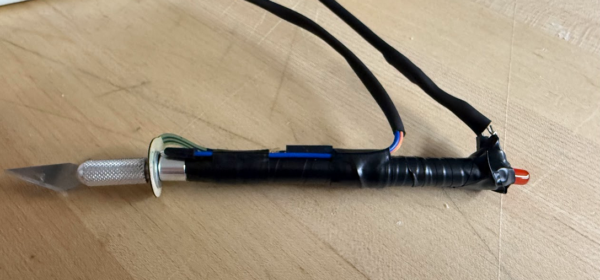
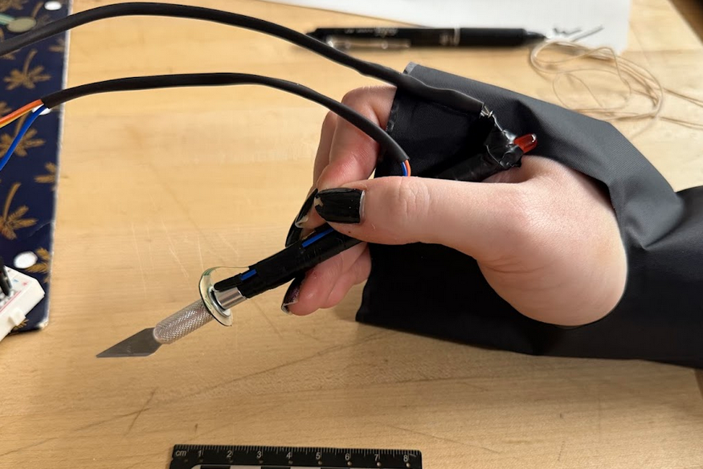

Overview
This project explored how a teleoperated surgical tool could return tactile information to the operator during delicate manipulation. The work focused on integrating sensing, actuation, and mechanical packaging into a compact robotic end effector suitable for medical robotics workflows.
Problem Statement
Teleoperated surgical systems often remove the surgeon from direct physical contact with the tissue, reducing the ability to feel force, contact, and compliance. The challenge was to create a tool that could measure those signals and communicate them back to the operator in a meaningful, responsive way.

Solution & Approach
The design combined force feedback and capacitive sensing within the end effector, then translated those measurements into pneumatic feedback delivered through a wrist interface. This created a closed feedback loop between the surgical tool and the user while maintaining a compact, controllable hardware package.

Results & Outcomes
The final prototype demonstrated a practical pathway for remote tactile sensing in teleoperated systems. It validated the integration of multiple sensing modes, showed that haptic cues could be relayed to the operator, and established a strong platform for future refinement in medical robotics applications.
Key Learnings
The project reinforced how tightly mechanical design, sensing fidelity, and control response are linked in haptic systems. Even small packaging decisions affect usability and signal quality, and meaningful feedback depends as much on interpretation by the operator as on the underlying sensor hardware.